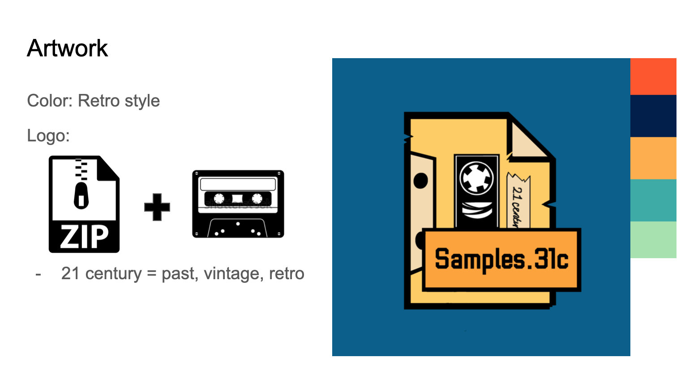
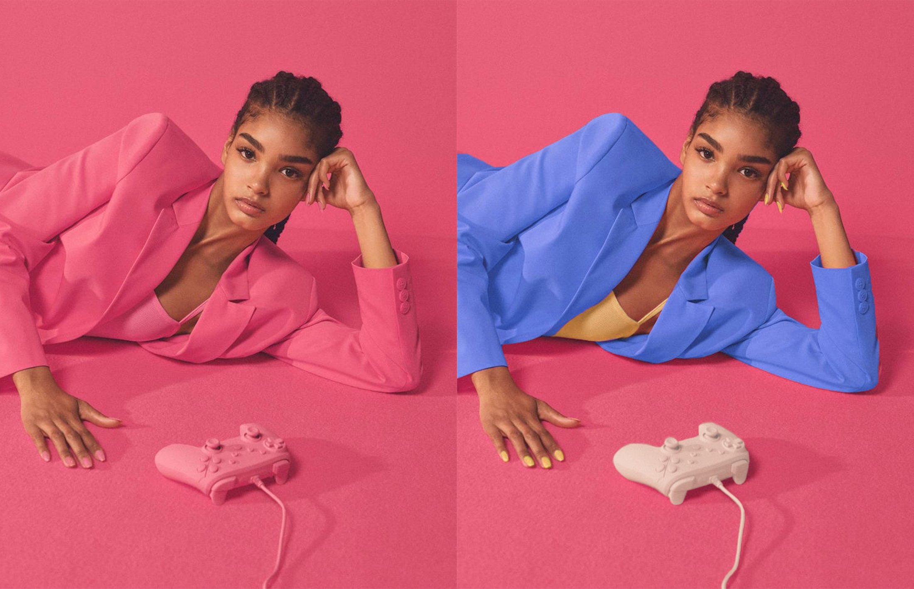
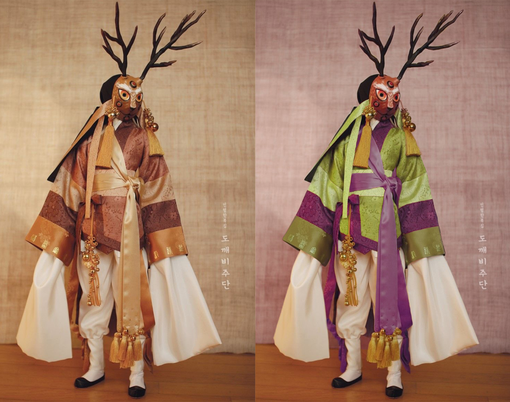
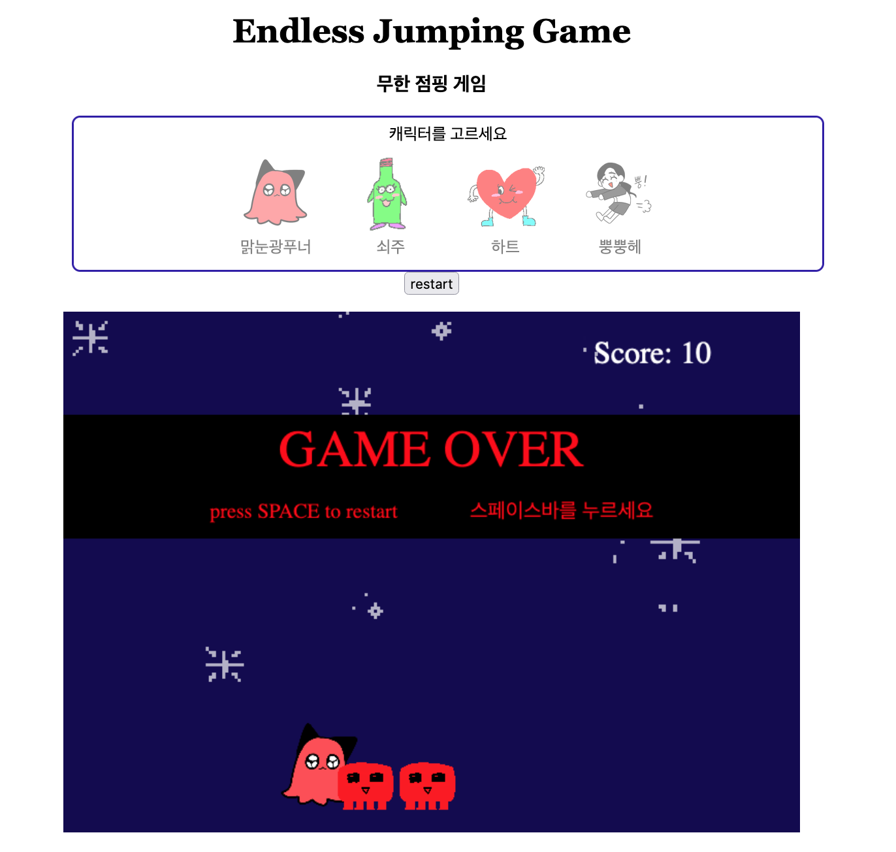

An aspiring Web Developer and UI/UX Designer, I am dedicated to creating engaging user experiences. Eager to learn and grow, I am on a journey to become a skilled professional in the field!
Resume
LinkedIn
GitHub
2021 Redistricting Gerrymandering Analysis Project
UI/UX, Front-end Developer
During the final capstone project in CSE416, I designed and implemented a data visualization web application to analyze gerrymandering in 2021 Redistricting plans. Our team collaborated and discussed how to utilize population, demographic, and map data to determine whether a redistricting plan is biased.
As a front-end developer:
Below is the example of the first screen of the application.
Logo Works
1. Logo for Podcast "Samples.31c"
During the FLM303 course, I created a podcast that revolves around the concept of a post-apocalyptic story. The podcast centers on "the last radio station on Earth in the 31st century," delivering sounds from the society of the 21st century. As part of this project, I have designed the logo showcased below.
Colors: I utilized a "Retro style" color palette to evoke a sense of nostalgia and convey an atmosphere of the past, aiming to evoke a feeling of history and nostalgia.
Design: To signify that it is an archive, I used a "zip" icon, symbolizing compression and storage. Also, the shape of a cassette tape to evoke a vintage aesthetic.
2. Logo for Game Development Team 'Coco Eclipse'
I developed a logo for a game development team called "Coco Eclipse." To align with the team name, I used a coconut shape as the foundation and added a crescent shape on top to represent the "eclipse" effect happening over the coconut.
For the color scheme, I opted for neon green and black to give a cyberpunk, arcade atmosphere that aligns with the type of games the team aims to develop. Additionally, I added a cute face resembling a coconut hole, which reflects the team's personality.
Apocalyptic Character Illustration
Utilizing color theory, I conceptualized characters with personalized colors that align with their apocalyptic background story. Through deliberate design choices, such as using complementing colors and vibrant hues, I aimed to capture the mood and aesthetics of the characters and their setting, bringing their unique narratives to life.
Color Combination Work
These are some examples of color combination works where I experimented with various combinations to enhance aesthetics and create visually pleasing compositions. Starting with original photos on the left, I explored different color schemes, including triadic and complementary palettes, to bring harmony and balance to the images.
Triadic Color Palette
Complementary Color Palette
Endless Runner Game
I developed an endless runner game to explore the principles of game design and gain a deeper understanding of its mechanics. Using JavaScript, I leveraged the power of canvas for responsive graphics and utilized CSS to enhance the overall visual experience. The process presented unique challenges that allowed me to further develop my skills and knowledge in game development.
Below is an example image showcasing the gameplay of the game. ▼
